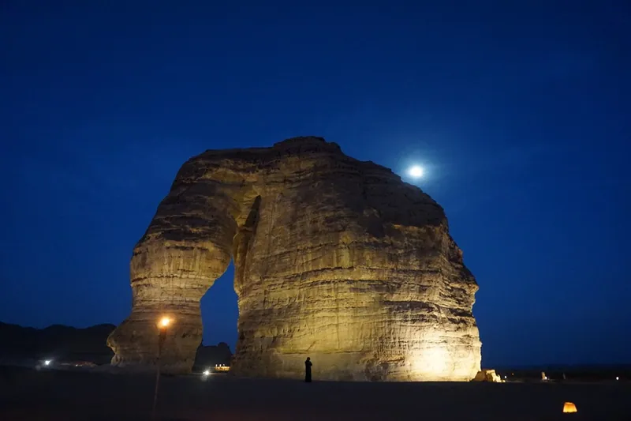

Kraje z wpisami
Każdy kraj ma swoją stronę ze zdjęciami i wpisami. Nowy kraj pojawia się tu sam, gdy dodam z niego pierwszy wpis.
- 57FinlandiaVI 2012
- 58NorwegiaVI 2012
- 101Bali, Indonezjawpis z I 2017
- 102Timor WschodniXII 2016
- 112Arabia SaudyjskaIX 2021


Lista krajów
Alfabetycznie, z podziałem na kontynenty. Nazwa w kolorze prowadzi do strony kraju z wpisami.
kraj z wpisamiodwiedzony, wpis w przygotowaniu
- Abchazja
- Albania
- Algieria
- Andora
- Angola
- Antigua i Barbuda
- Arabia Saudyjska
- Argentyna
- Armenia
- Austria
- Azerbejdżan
- Bahrajn
- Barbados
- Belgia
- Bhutan
- Białoruś
- Boliwia
- Bośnia i Hercegowina
- Brazylia
- Bułgaria
- Chile
- Chiny
- Chorwacja
- Cypr
- Cypr Północny
- Czarnogóra
- Czechy
- Dania
- Dominika
- Dominikana
- Egipt
- Ekwador
- Estonia
- Etiopia
- Finlandia
- Francja
- Gambia
- Górski Karabach
- Grecja
- Grenada
- Gruzja
- Gwatemala
- Gwinea
- Hiszpania
- Holandia
- Indie
- Indonezja
- Iran
- Irlandia
- Islandia
- Izrael
- Japonia
- Jemen
- Jordania
- Kambodża
- Kanada
- Katar
- Kazachstan
- Kenia
- Kirgistan
- Kolumbia
- Kosowo
- Kuba
- Kuwejt
- Laos
- Liban
- Liberia
- Liechtenstein
- Litwa
- Łotwa
- Luksemburg
- Macedonia
- Madagaskar
- Malediwy
- Malezja
- Malta
- Maroko
- Mauretania
- Mauritius
- Meksyk
- Mołdawia
- Monako
- Naddniestrze
- Namibia
- Nepal
- Niemcy
- Norwegia
- Oman
- Osetia Południowa
- Panama
- Paragwaj
- Peru
- Polska
- Portugalia
- Republika Południowej Afryki
- Republika Zielonego Przylądka
- Rosja
- Rumunia
- Sahara Zachodnia
- Saint Kitts i Nevis
- Saint Lucia
- Saint Vincent i Grenadyny
- San Marino
- Senegal
- Serbia
- Sierra Leone
- Singapur
- Słowacja
- Słowenia
- Stany Zjednoczone
- Szwajcaria
- Szwecja
- Tajlandia
- Tanzania
- Timor Wschodni
- Trynidad i Tobago
- Tunezja
- Turcja
- Ukraina
- Urugwaj
- Uzbekistan
- Watykan
- Węgry
- Wielka Brytania
- Wietnam
- Włochy
- Wyspy Świętego Tomasza i Książęca
- Zjednoczone Emiraty Arabskie
Pozostałe państwa z mojej listy (73)
- Afganistan
- Australia
- Bahamy
- Bangladesz
- Belize
- Benin
- Birma
- Botswana
- Brunei
- Burkina Faso
- Burundi
- Czad
- Demokratyczna Republika Konga
- Dżibuti
- Erytrea
- Fidżi
- Filipiny
- Gabon
- Ghana
- Gujana
- Gwinea Bissau
- Gwinea Równikowa
- Haiti
- Honduras
- Irak
- Jamajka
- Kamerun
- Kiribati
- Komory
- Kongo
- Korea Północna
- Korea Południowa
- Kostaryka
- Lesotho
- Libia
- Malawi
- Mali
- Mikronezja
- Mongolia
- Mozambik
- Nauru
- Niger
- Nigeria
- Nikaragua
- Nowa Zelandia
- Pakistan
- Papua-Nowa Gwinea
- Republika Środkowoafrykańska
- Rwanda
- Salwador
- Samoa
- Seszele
- Somalia
- Somaliland
- Sri Lanka
- Suazi
- Sudan
- Sudan Południowy
- Surinam
- Syria
- Tadżykistan
- Tajwan
- Togo
- Tonga
- Turkmenistan
- Tuvalu
- Uganda
- Vanuatu
- Wenezuela
- Wybrzeże Kości Słoniowej
- Wyspy Salomona
- Zambia
- Zimbabwe